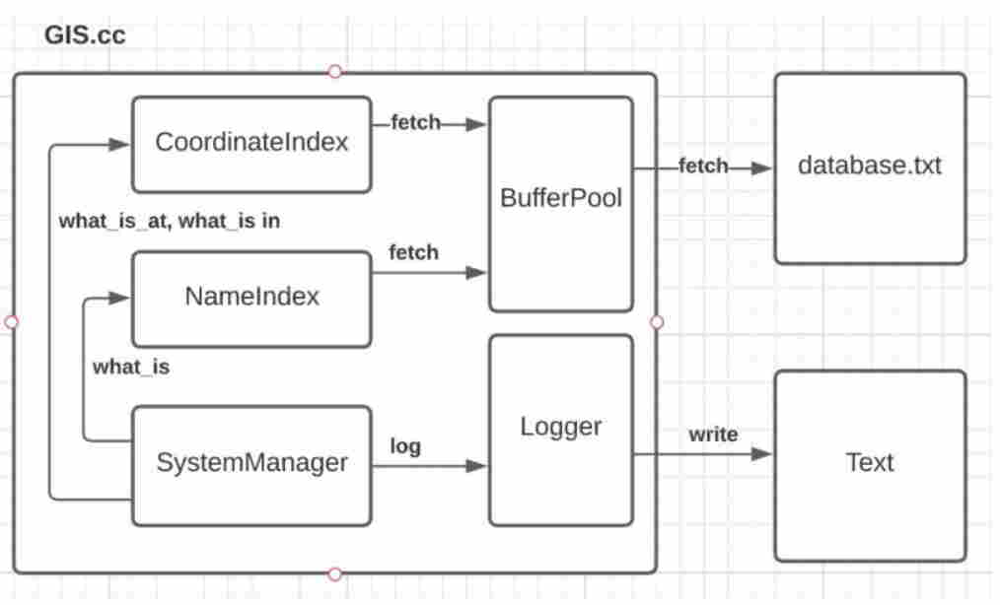

This is the final project I did for the COMP 8042 course in BCIT. The goal is to create a system that create and maintain a GIS database file that contains all the records that are imported as the program runs.
The GIS records are indexed by the Feature Name and State field. This name index supports finding offsets of GIS records that match a given feature name and state abbreviation. The GIS records will also be indexed by geographic coordinate. The coordinate index will support finding offsets of GIS records that match a given primary latitude and primary longitude.
The three important components (classes) of this project are
- NameIndex - maintain a list of entries that store a feature name + state abbreviation and the file offsets of the matching records record.
- CoordinateIndex - stores a list of entries that store a geographic coordinate and a collection of the file offsets of the matching GIS records
- BufferPool - a proxy for the main database.
NameIndex implements hashtable, and uses quadratic probing ((n^2 + n) / 2) to resolve collision. CoordinateIndex implements PR quadtree. BuufferPool implments LRU Caching. The figure below shows the overall architecture of the system

Source code
here is the final source code. The program will take the names of the database file, script file and log file from the command line, like this
./GIS <database file name> <command script file name> <log file name>
The script file and dataset are both included in the github repo